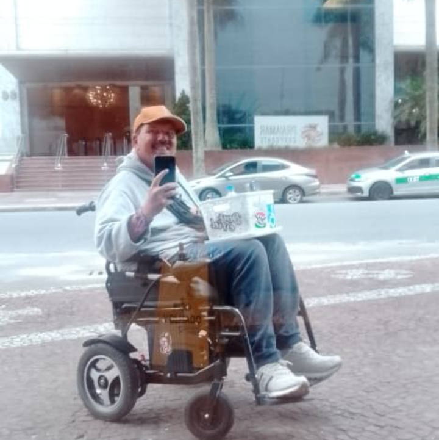
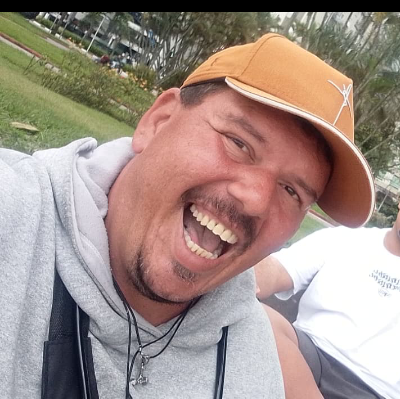
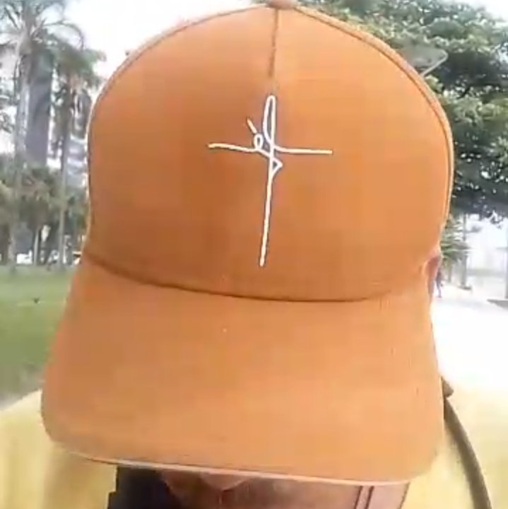

Uma casa.
Mais autonomia.
Um sonho pro Artur.
Artur Kruger tem 38 anos e, depois de sofrer um AVC, passou a usar cadeira de rodas. Seu sonho é conquistar uma casa própria, adaptada às suas necessidades.
Enquanto luta por esse objetivo, ele percorre a orla de Santos vendendo paçoquinhas e drops para ajudar no próprio sustento.

Artur vende paçoquinhas e drops pela orla de Santos.
Ele segue em frente, um dia de cada vez.
Depois do AVC, a vida de Artur mudou. A cadeira de rodas faz parte de sua rotina, mas não apagou sua vontade de seguir em frente e conquistar independência.
Quem passa pela orla de Santos pode encontrá-lo vendendo paçoquinhas e drops. Com esforço próprio e persistência, ele ajuda a garantir seu sustento.
O projeto Uma Casa pro Artur quer aproximar esse sonho da realidade: uma moradia própria, acessível e adaptada para que ele possa viver com mais segurança, conforto e autonomia.
Se não puder doar, compartilhar esta campanha também ajuda muito.

Conheça o Artur
Por trás desta campanha existe uma pessoa real, com disposição para trabalhar e um sonho que merece ser ouvido.

Vamos ajudar o Artur a chegar em casa?
Contribua pelo Pix e ajude a tornar possível o sonho de uma casa adaptada. Doe o valor que estiver ao seu alcance — toda ajuda é bem-vinda.
Não pode contribuir agora? Compartilhe esta página com amigos, familiares e grupos da sua comunidade.
Confira o nome do destinatário no aplicativo do seu banco antes de confirmar o Pix.